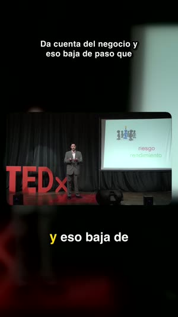
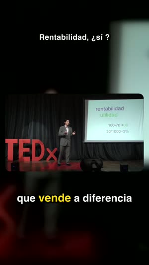
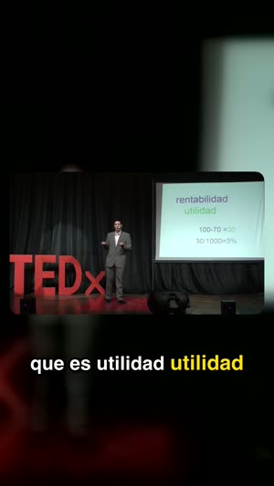

Las repeticiones
El gráfico de los momentos más repetidos que publica YouTube. El comienzo de un vídeo siempre está al máximo: Cutlantis no lee el valor bruto sino la desviación de la tendencia, para que solo salgan los picos reales.
YouTube ya sabe qué momentos de tu vídeo vuelve a ver la gente. Cutlantis lee esa curva, escucha la voz, analiza lo que se dice — y te entrega clips verticales subtitulados, listos para publicar.
Las campañas de clipping pagan por visualización. A 1 € por cada 1.000, 89.000 visualizaciones de tus clips pagan Cutlantis al precio de lanzamiento — 199.000 al precio normal. Todo lo demás es para ti.
Las campañas de clipping pagan por visualización. A 1 € por cada 1.000, 89.000 visualizaciones de tus clips pagan Cutlantis. Todo lo demás es para ti.
Un orden de magnitud, no una promesa. Las campañas suelen anunciar de 1 a 5 $ por cada 1.000 visualizaciones según la campaña y la plataforma; los topes por clip y las visualizaciones rechazadas reducen la ganancia real. Cálculo al precio mostrado.
Un buen clip no es solo un momento fuerte: es un momento que se sostiene solo. Estas tres familias de señales se combinan y se ponderan, y cada clip te dice qué lo hizo destacar.
El gráfico de los momentos más repetidos que publica YouTube. El comienzo de un vídeo siempre está al máximo: Cutlantis no lee el valor bruto sino la desviación de la tendencia, para que solo salgan los picos reales.
Intensidad y dinámica del sonido, medidas cada 50 milisegundos. El énfasis, la risa y la subida de tono se ven en la onda antes de leerse en el texto.
Sobre la transcripción palabra por palabra: fuerza del gancho, presencia de un remate, cifras, carga emocional. Y penalizaciones — un clip que empieza con «entonces» no significa nada fuera de contexto.
Cuando un creador hace una mención patrocinada, muchos espectadores la saltan — y todos aterrizan en el mismo punto. En la curva de los momentos más repetidos, ese punto se convierte en uno de los picos más altos del vídeo. Una herramienta que sigue la curva a ciegas te propondrá convertirlo en clip.
Cutlantis detecta los patrocinios: la base colaborativa SponsorBlock, los capítulos del vídeo y la transcripción leída junto con la descripción — marca citada, código promocional, «enlace en la descripción». Nunca hace un clip con ellos y borra de la curva el falso pico que los sigue.
Medido en 52 vídeos patrocinados de grandes canales franceses de YouTube, septiembre de 2026. Cuando SponsorBlock aún no conoce el vídeo, el filtro se basa solo en la transcripción: 17 %.
Elige los bordes en la línea de tiempo — la curva de los momentos más repetidos te guía — o haz clic en una frase de la transcripción. Cutlantis hace el resto, igual que con un clip propuesto:
1080 × 1920, subtitulados palabra por palabra, encuadrados, titulados, audio al nivel que esperan las plataformas. Estas imágenes salen de vídeos analizados tal cual.



El vídeo se descarga, se transcribe y se monta en tu equipo. Ningún vídeo se sube a un servidor, no hay cuenta que crear ni minutos que comprar.
Algunos vídeos, sobre todo los recientes, no exponen ese gráfico. Cutlantis lo avisa y se apoya en la voz y el texto. La selección sigue siendo buena, solo menos guiada por la audiencia.
Tres fuentes: SponsorBlock, una base colaborativa donde los espectadores marcan los segmentos patrocinados (consultada de forma anónima: el vídeo no sale de tu ordenador); los capítulos del vídeo; y la transcripción, leída junto con la descripción — marca citada, código promocional, «enlace en la descripción». Los segmentos detectados aparecen rayados en la línea de tiempo.
La transcripción admite la mayoría de idiomas y detecta el del vídeo, japonés y chino incluidos. Las reglas de gancho están afinadas hoy para francés e inglés.
Con cinco minutos de vídeo: unos veinte segundos de descarga, un minuto de transcripción y unos quince segundos por clip exportado.
Todo: bordes a la décima de segundo, encuadre, subtítulos, título, estilo gráfico. También puedes añadir un extracto a mano.
Para descargar el vídeo, sí. La transcripción, el análisis y la exportación se hacen luego en tu ordenador.
Un Mac con Apple silicon (M1 o posterior) con macOS 14 Sonoma o posterior, o un PC con Windows 10 (versión 1809 o posterior) o Windows 11, 64 bits. Deja unos 3 GB libres.
Recortar el vídeo de otra persona para republicarlo requiere su permiso. Las campañas de clipping te lo dan para los vídeos que cubren; para lo demás, Cutlantis está hecho para tus propios vídeos o los que tengas derecho a usar.